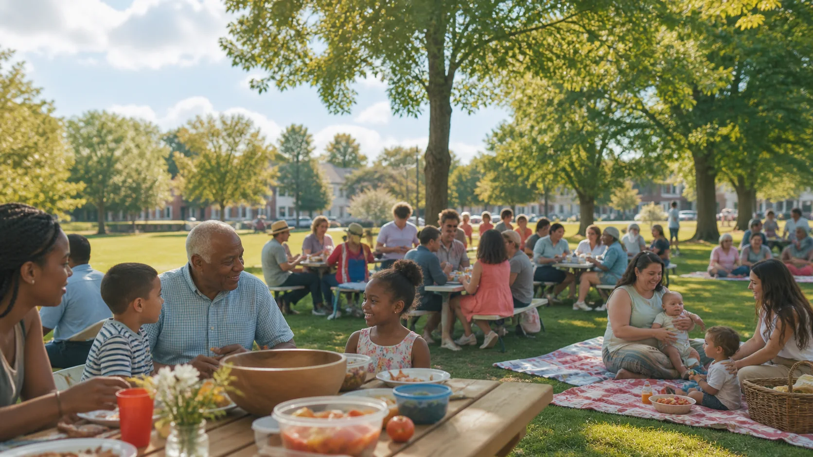
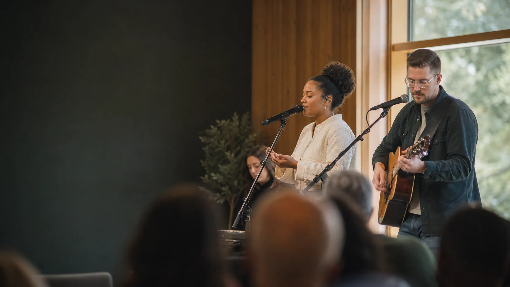

Community prayer
6:30 PM in the Chapel
Welcome home
Grace Harbor is a church where questions are welcome, people are known, and the hope of Jesus shapes how we live.
What began as a small living-room gathering in 1998 has grown into a multigenerational community serving Brookfield and the surrounding neighborhoods. We believe Scripture is true, grace changes people, and every person has a part to play.
Find your place"My hope is that every person who walks through our doors feels seen, welcomed, and invited into a growing life with Jesus."
Warm people, practical teaching, and room to take your next step at your own pace.
6:30 PM in the Chapel
6:30 PM in the Student Hall
Homes across Brookfield
Friendly hosts will help you find coffee, kids check-in, and a comfortable seat. Services last about 70 minutes.
Know what to expectBuild lasting friendships, grow in faith, and serve your neighbors alongside people in every season of life.
Belonging, honest conversation, worship, and fun for grades 6-12.
Explore youthClasses and gatherings for deeper faith in every stage of life.
View gatheringsMusicians, vocalists, and production teams helping people engage.
Join the teamPractical care for schools, families, and local partners across Brookfield.
Serve locallySimple ways to meet people, serve together, and take a meaningful next step.

Lunch, lawn games, and an easy afternoon for the whole church family.
Harbor Park, North LawnMeet our pastors and learn what makes Grace Harbor home.
Community RoomJoin practical projects supporting schools and neighborhood partners.
Meet in the Main LobbyBiblical teaching that is thoughtful, hopeful, and grounded in everyday life.
Finding steady confidence when the next chapter is still unclear.

Community is built in small moments of welcome, care, and shared life.
"We arrived knowing no one. Within a few Sundays, people remembered our names and showed up for our family in a difficult season."
"The youth leaders make space for honest questions. My son found friends and confidence here."
"Serving at the food pantry helped me feel connected to this city in a new way."
Your giving supports local families, trusted community partners, and ministry for every generation.
We know visiting a church can feel like a big step. Here is everything you need for a relaxed Sunday.
Ask a questionGuest spaces are beside the main entrance. Our parking team can guide you.
Arrive 15 minutes early. A host will help with secure check-in and classroom introductions.
Each gathering lasts about 70 minutes and includes music, prayer, and a practical message.
Wear what feels comfortable. You will see everything from jeans to Sunday best.
Step-free entrances, accessible seating, hearing assistance, and family restrooms are available.
Stop by the welcome table for coffee, conversation, and help finding your next step.
Ask about a visit, a ministry, prayer, or anything that would help you feel at home.